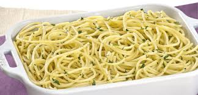

Macarrao ao Alho e Oleo
Receita rapida para o dia a dia. Rendimento: 4 porcoes.
Ingredientes
- 500g de macarrao espaguete
- 1/2 xicara de azeite
- 6 dentes de alho amassados
- Salsinha picada a gosto
- Sal e pimenta-do-reino
- Queijo parmesao ralado (opcional)
Modo de Preparo
- Cozinhe o macarrao em agua fervente com sal ate ficar al dente.
- Em uma panela, aqueca o azeite e doure o alho sem queimar.
- Escorra o macarrao e junte na panela com o alho.
- Misture bem, tempere com sal e pimenta.
- Finalize com salsinha e parmesao. Sirva quente.